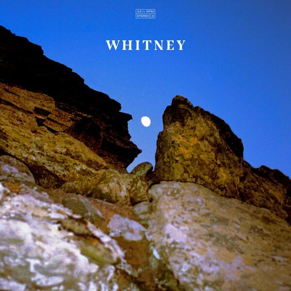
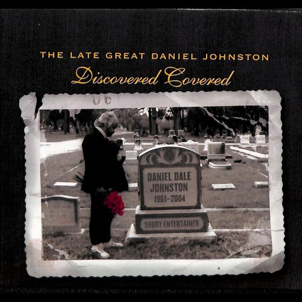
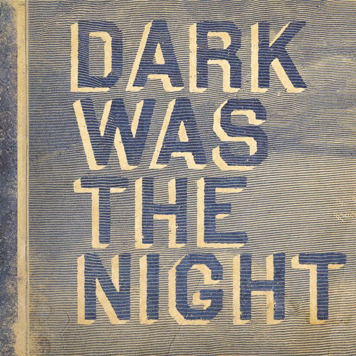
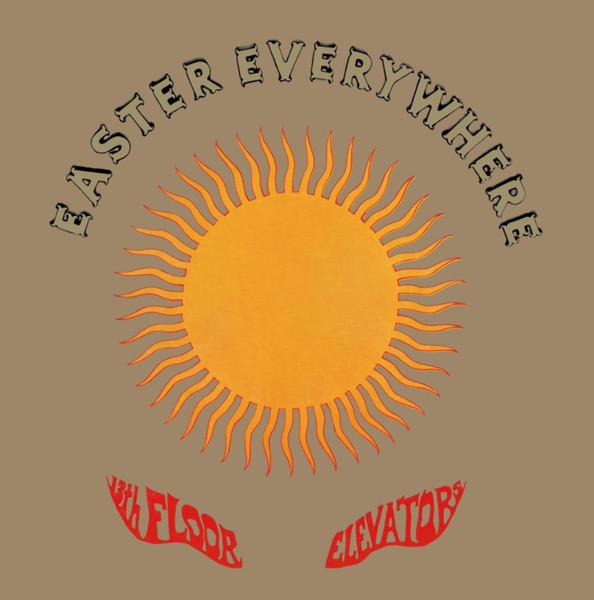
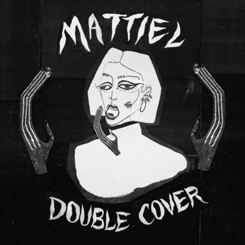
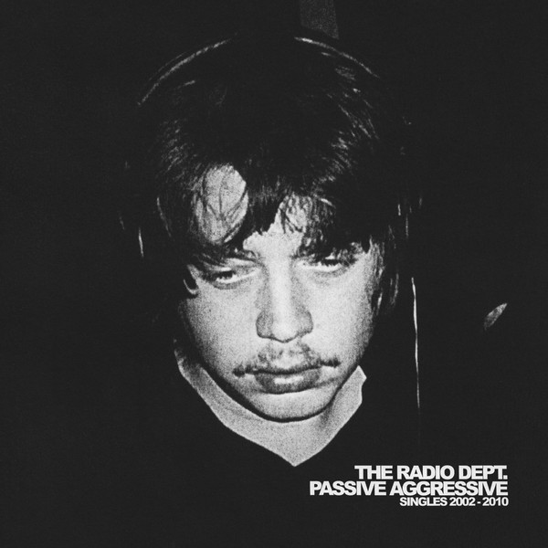
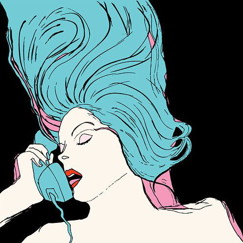

01Crying, Laughing, Loving, Lying
Whitney – Candid (2020)
orig. Labi Siffre

02The Story Of An Artist
M. Ward – The Late Great Daniel Johnston: Discovered Covered (2001)
orig. Daniel Johnston
 03
03
Yeah! Oh, Yeah!
Tracey Thorn & Jens Lekman – SCORE! Twenty Years of Merge Records - The Covers! (2009)
orig. The Magnetic Fields
 04
04
Walking The Cow
T.V. On The Radio – The Late Great Daniel Johnston: Discovered Covered (2001)
orig. Daniel Johnston

05Train Song
Feist + Ben Gibbard – Dark Was The Night (2009)
orig. Vashti Bunyan
 06
06
Everybody´s Got To Learn Sometime
The Field – Yesterday And Today (2009)
orig. The Korgis
 07
07
(I Can't Get No) Satisfaction
Cat Power – The Covers Record (2000)
orig. The Rolling Stones
 08
08
You Can Have It All
Thao, The Get Down Stay Down – Holy Roller (2013)
orig. George McCrae
 09
09
Fade Into You
Au Revoir Simone feat. Nikolai Fraiture Of The Strokes – Internet Single (2014)
orig. Mazzy Star
 10
10
Wonderwall
Cat Power – Deep Inside The Radio - Peel Session (2000)
orig. Oasis
 11
11
What a Waster
Adam Green – Black Session (2005)
orig. The Libertines
 12
12
Demain Tu Peux Changer (Will You Love Me Tomorrow)
Dusty Springfield – Mademoiselle Dusty (French EP) (1965)
orig. The Shirelles
 13
13
Seabird
Whyte Horses – Hard Times (2019)
orig. Fleetwood Mack
 14
14
Zorbing
Sophie Madeleine – Internet Single
orig. Stornoway
 15
15
Hammond Song
Whitney – Strange Overtones (2020)
orig. The Roches
 16
16
Please Please Please
PacificUV – Chrysalis (2011)
orig. The Smiths
 17
17
True Love Will Find You in the End
Wilco – Alpha Mike Foxtrot: Rare Tracks 1994-2014 (2014)
orig. Daniel Johnston
 18
18
Everybody’s Talkin’
Luna – Best of Luna (2006)
orig. Fred Neil
19
Friday I'm In Love
Yo La Tengo – Stuff Like That There (2015)
orig. The Cure
 20
20
Here Comes Your Man
Meaghan Smith – (500) Days Of Summer (Music From The Motion Picture) (2009)
orig. Pixies
 21
21
Ain't No Sunshine
The Equatics – Doin It!!!! (1972)
orig. Bill Withers
 22
22
Lay Lady Lay
The Dynamics – Version Excursions (2007)
orig. Bob Dylan

23(It's All over Now) Baby Blue
13th Floor Elevators – Easter Everywhere (2012)
orig. Bob Dylan

24Guns of Brixton
Mattiel – Double Cover (2020)
orig. The Clash
 25
25
Ceremony
Chromatics feat. Glass Candy – Cherry (2017)
orig. New Order
 26
26
Come As You Are
Porcelain Raft – Come As You Are (Kurtvana cover) (2011)
orig. Nirvana
 27
27
Sprawl Of Glass
The Hood Internet – thehoodinternet.com
orig. Arcade Fire vs Blondie
 28
28
America
The Parvarim – The Parvarim Sing Simon And Garfunkel (In Hebrew) (1972)
orig. Simon & Garfunkel
 29
29
Africa
Weezer – Africa (2018)
orig. Toto

30Bachelor Kisses
The Radio Dept. – Passive Aggressive: Singles 2002-2010 (2011)
orig. The Go-Betweens

31Running Up That Hill
Chromatics – Night Drive (2007)
orig. Kate Bush
 32
32
Dream Baby Dream
Bruce Springsteen – Dream Baby Dream (2008)
orig. Suicide
 33
33
I'm On Fire
Joensuu 1685 – I'm On Fire / Perfect Grace (2010)
orig. Bruce Springsteen
 34
34
Yours to keep
Alex Winston – The Basement Covers (2010)
orig. The Teddybears